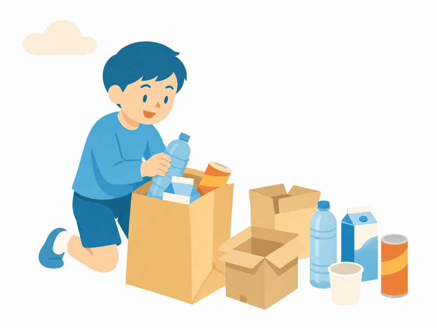

「あ、明日ペットボトル使うんだった。集めて、って言ってなかった……」
図工の準備物で、こんな冷や汗をかいたこと、ありませんか。
気づいたら授業の前日。放課後にスーパーでこっそり2本買って、自分で飲んで空にする。あるいは急いで「明日持ってきて」と流して、持ってきたのは半分の子だけ。そんな経験が一度もない先生は、ここで閉じてもらって大丈夫です。ここから先は、「また準備物、言い忘れた」をなくしたい先生のための話です。
図工で家庭にお願いするものは、空き箱もペットボトルも牛乳パックも、意外と多い。しかも来週いきなりでは、家庭もそろえられません。やることは一つだけ。年度はじめに「1年間の見通し」を1枚。あとは題材の前に、「よかったら」の一言を早めに。家庭に無理をさせず、こっちも自腹でコンビニに走らずにすみます。その2枚を、Geminiが作ります。地味だけれど、これも立派な働き方改革だと思っています。
年度が始まると、国語も算数も、行事も校務分掌も一気に来ます。図工の準備物は、どうしても後回し。「あとで言おう」と思っているうちに、授業の前日になっている。よくあることです。でも、空き箱やペットボトルは、家庭も急にはそろえられません。お願いするのは、はさみやのりのような道具ではなく（それは学校にあります）、家でためておける物ばかり。だからこそ、早めに・まとめて渡しておくのが効きます。
だから、早めに・ゆるく・まとめて伝えられると助かります。はさみやカッター、のりは学校にあります。お願いしたいのは、集めておいてもらえる材料だけ。それも「必ず」ではなく、できる範囲で、よかったら。こういうおたよりを、Geminiに手伝ってもらいます。
使うのはGeminiの「Canvas」です。図工の年間計画（月・題材・使う材料の一覧）を渡すと、家庭向けのおたよりに組み替えてくれます。作るのは2種類です。
Geminiを開いて、下のプロンプトをコピーして貼るだけです。[ ] のところを、自分の学年や題材に書き換えてください。
あなたは、小学校で図画工作を教える先生を手伝うアシスタントです。 図工の年間の予定をもとに、保護者向けの「1年間の準備の見通し」おたよりを作ってください。 ■ わたしが渡すもの（どちらかでよい） ・図工の年間計画（月・題材・使う材料の一覧）を、そのまま貼りつけます。 [ここに貼る] ・無ければ、箇条書きでもよい。例：10月「たいせつボックス」→ 空き箱・モール／2月「はこでつくったよ」→ 空き箱・段ボール ■ 作ってほしいもの A4たて1枚。年度のはじめに配って、家庭が少しずつ材料をためておけるようにします。 1. あいさつ：1年間でこんな材料を使うこと。すぐ用意できない物もあるので、早めにお知らせすること。 2. 時期ごとの見通し：季節（4〜6月／7〜9月／10〜12月／1〜3月）ごとに「こんなことをします・こんな材料を使います」を、ざっくり表で。 3. 「ためておいてもらえると助かるもの」の一覧を目立つように（空き箱・ペットボトル〈キャップつき〉・牛乳パック・紙コップ・トイレットペーパーの芯・段ボール・大きな紙袋・使わなくなった布 など）。きれいにして・つぶさずに、も一言。 4. しめくくり：はさみ・のり・クレヨンなどの道具は学校にあること。あらためて買う物はないこと。 ■ ぜったいに守るトーン（大事） ・「必ず」「絶対」を使わない。「よかったら」「できる範囲で」「無くても大丈夫」「学校でも用意します」で書く。 ・「持ってこられない時は相談してください」は入れない（家庭に気をつかわせない）。 ・はさみ・カッター・のりなど、学校にある道具は書かない。お願いするのは"集めておく材料"だけ。 ・提出欄・サイン欄はつけない（義務にしない）。 ・学校名・担任名・年度は [ ] のままにする。 ■ 出力の形 ・そのまま印刷できる、1つで完結したHTML（A4たて・文字は大きめ）。 ・写真は使わない。飾りは簡単なSVGだけ自分で描く（外部の画像URLは使わない）。 ・「⌘/Ctrl＋P → PDFに保存」で崩れないCSSにする。
次の図工の題材について、保護者向けの「ちょっとお願い」を1枚作ってください。 年間の見通しを配ったあと、その都度、軽く渡すものです。 ■ 題材の情報 ・学年：[2年生] ・題材名：[はこでつくったよ] ・する時期：[2月ごろ] ・使う"集めておく材料"：[空き箱・段ボール ※わかる範囲でよい] ■ 作ってほしいもの ・「今度こんなことをします」を1〜2文で。 ・「もしあれば、よかったら持たせてください」という材料を、SVGの小さな挿絵つきで。 ・「いつごろ使うか」と「それまでにためておいてもらえると助かる」を一言。 ・A4の半分くらいの小さめでよい。掲示にもGoogleサイトにも使える、1つで完結したHTML。 ■ ぜったいに守るトーン（①と同じ） ・「よかったら」「できる範囲で」「無くても大丈夫」「学校でも用意します」で書く。 ・「相談してください」「必ず」は入れない。はさみなど学校の道具は書かない。提出欄はつけない。 ・学校名・担任名・日付は [ ] のままにする。 ・写真は使わず、挿絵は簡単なSVGだけ自分で描く。
できあがりを見ながら、直したいところだけを短く伝えます。Canvasが同じ画面を作り直してくれます。
同じ題材で、教室に掲示する「図工の めあて と ながれ カード」を作ってください。 ・めあて（この時間でやること）を1文で。 ・作り方のながれを、3〜5ステップの絵（SVG）と短い言葉で。 ・かたづけと安全のやくそくを1〜2つ。 ・A4よこ1枚・1つで完結するHTML・写真は使わない。低学年ならふりがなを多めに。
上のプロンプトを実行すると、こんな物ができます。実物を見本として置いておきます。学校名・担任名・時期は空欄のまま、トーンは「よかったら・できる範囲で」にそろえています。
